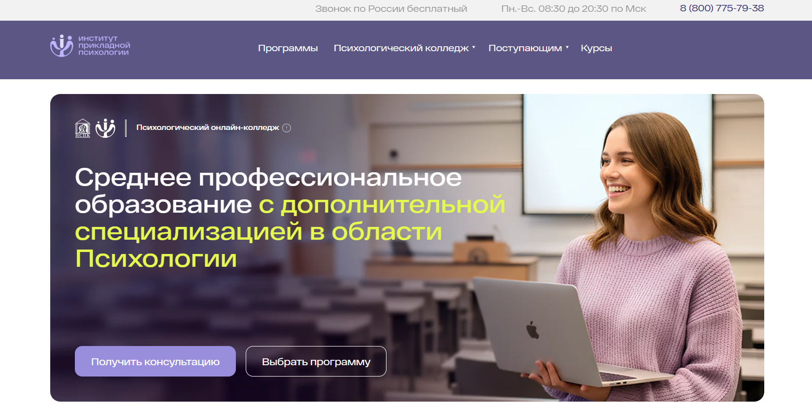
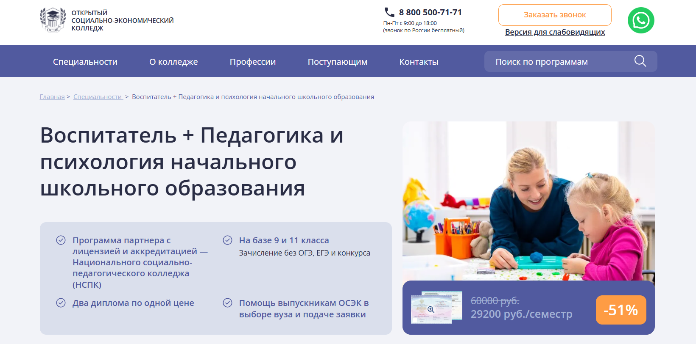
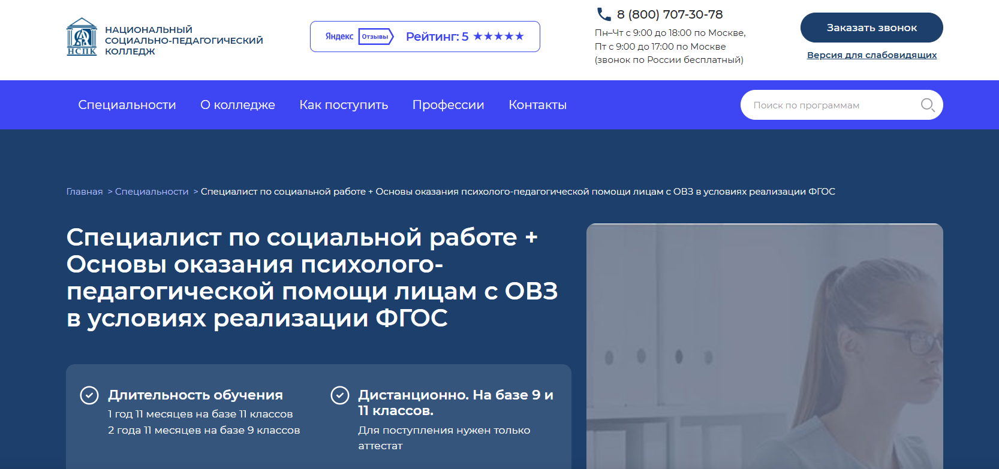
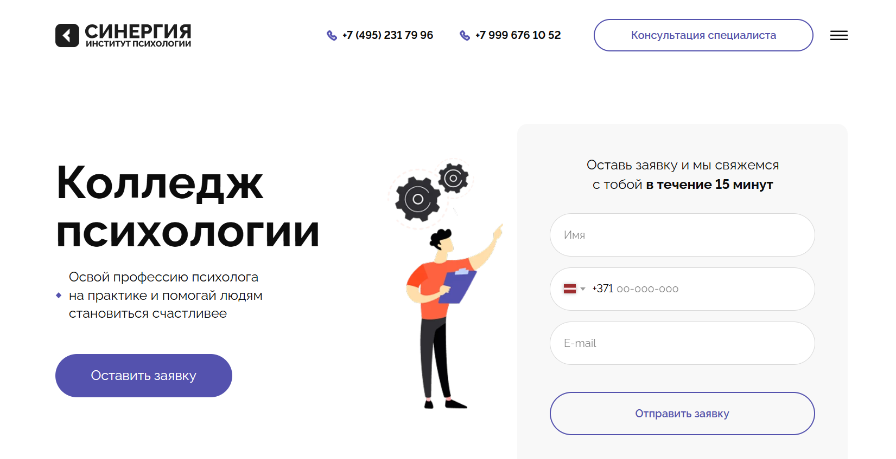
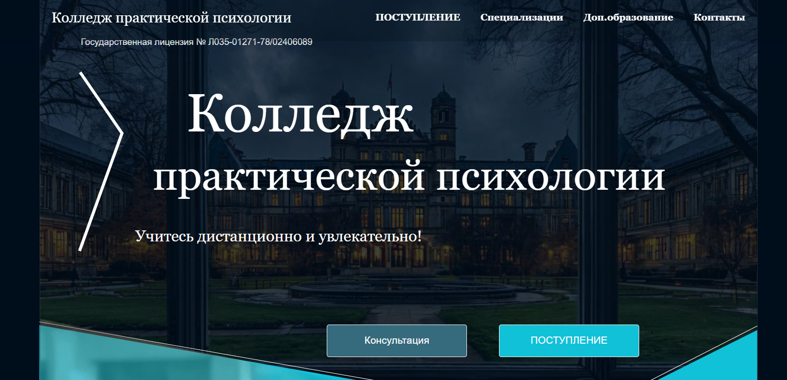
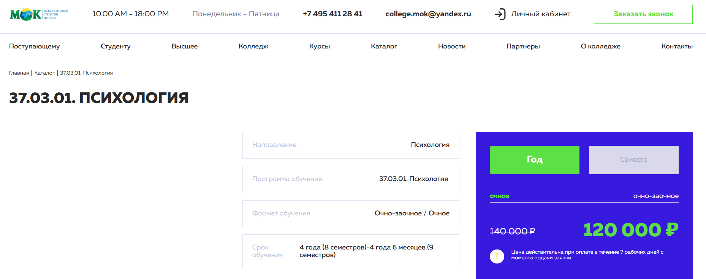

Обучение психологии в колледжах — это возможность получить профессию психолога на базе 9 класса в рамках среднего профессионального образования. Студенты изучают основы психологии, проходят практические занятия и получают необходимые знания для работы в социальной сфере, образовательных и медицинских учреждениях. Колледжи предлагают программы подготовки по направлениям: детская психология, клиническая психология, практическая психология, спортивная психология. Выпускники получают дипломы государственного образца и могут продолжить обучение в педагогическом университете или на психологическом факультете. Мы составили рейтинг колледжей, где готовят специалистов в области психологии — от педагогического колледжа до медицинского колледжа.
Информация обновлена:
ТОП онлайн-колледжей с программами обучения по психологии
- 🏆 Институт прикладной психологии в социальной сфере (ИППСС)
- 🏆 Открытый социально-экономический колледж (ОСЭК)
- 🏆 Национальный социально-педагогический колледж (НСЭК)
- Колледж психологии Университета «Синергия»
- Колледж практической психологии
- Московский образовательный колледж
Отличительные преимущества каждого онлайн-колледжа по психологии
| № | Учебное заведение | Отличительные преимущества | |
|---|---|---|---|
| 🥇 | Институт прикладной психологии в социальной сфере | Полностью дистанционный формат без очных сессий, два диплома (СПО + профпереподготовка), сильный упор на прикладную психологию и быстрый выход в профессию без необходимости вуза. | Перейти |
| 🥈 | Открытый социально-экономический колледж | Самая доступная стоимость обучения, система скидок до 51%, мобильное приложение, заочная форма с дистанционными технологиями и помощь при поступлении в вузы. | Перейти |
| 🥉 | Национальный социально-педагогический колледж | Короткие сроки обучения, гибкий график без жёсткого расписания, возможность оплаты с использованием материнского капитала и налогового вычета, акцент на социальной и психолого-педагогической практике. | Перейти |
| 4 | Колледж психологии Университета «Синергия» | Обучение в структуре крупного университета, сочетание очного и онлайн форматов, широкий выбор направлений от СПО до магистратуры и сильная интеграция с рынком труда. | Перейти |
| 5 | Колледж практической психологии | Узкая специализация именно на практической психологии, высокая вовлеченность студентов, обучение у практикующих психологов и ориентир на частную практику после выпуска. | Перейти |
| 6 | Московский образовательный колледж | Очный и очно-заочный форматы, фундаментальная подготовка, длительное обучение с упором на академическую психологию и дальнейшее поступление в университеты и аспирантуру. | Перейти |
Профессиональные направления коллeджей по психологии
1. Детский психолог
ИППСС
- Основы детской психологии
- Тьюторское сопровождение детей с РАС
- Педагог работы с детьми с умственной отсталостью
- Логопедагогика
- Игропедагогика
- Перинатальная психология
НСПК
ОСЭК
2. Семейный психолог
ИППСС
НСПК
НСПК
3. Психолог-консультант
ИППСС
НСПК
4. Логопед
ИППСС
ОСЭК
НСПК
5. Нейропсихолог
ИППСС
НСПК
6. Кризисный психолог
ИППСС
НСПК
7. Перинатальный психолог
ИППСС
НСПК
8. Криминальный психолог
ИППСС
НСПК
1. 🏆 Институт прикладной психологии в социальной сфере

✅ Официальный сайт: ippss.ru
- 💸 Стоимость – обучение доступно в формате среднего профессионального образования и дополнительного образования, колледжи предлагают гибкие условия оплаты без привязки к экзаменам и баллу аттестата
- 📚 Формат – дистанционное обучение: видеоматериалы, учебные модули, тестирование, практические задания, практику студенты проходят онлайн без очных сессий
- ⏳ Продолжительность – от 1 года 11 месяцев до 3 лет 11 месяцев после 9 классу или окончания школы, что сопоставимо с очным форматом
- 📜 Документ – выпускники получают дипломы государственного образца о среднем профессиональном образовании и дополнительный диплом о профессиональной переподготовке с регистрацией в федеральных реестрах
Институт реализует образовательные программы в сотрудничестве с Национальным социально-педагогическим колледжем и ориентирован на подготовку специалистов для социальной сферы. Обучение выстроено так, чтобы выпускнику работать можно было сразу после окончания обучения, не продолжая обучение в вузе. Студенты изучают основы психологии, практической психологии и педагогическое образование с дополнительной специализацией. Большое внимание уделяется практическим занятиям, где формируются навыки психологической поддержки и консультирования. После окончания колледжа выпускники получают прикладную профессию и могут продолжить обучение в университеты и вузы. Программы подготовки подходят тем, кто поступает на базе 9 или 11 классов без ЕГЭ и вступительных экзаменов. Формат позволяет совмещать учебу, работу и семейные обязанности, а полученные знания применяются в частную практику и профессиональных профессиях.
Направления подготовки:
- Среднее профессиональное образование: дошкольная педагогика, преподавание в начальных классах, специальное дошкольное образование, коррекционная педагогика, социальная работа
- Профессиональная переподготовка: психологическое консультирование, детская психология, семейная психология, специальная психология, нейропсихология взрослых, клиническая психология, экстремальная и перинатальная психология
Преимущества и особенности:
- подготовку специалистов ведут практикующие психологи и педагоги с ученой степенью;
- студенты получают два диплома и расширяют возможности карьеры;
- обучение проходит полностью онлайн без выезда на сессии;
- акцент на практических навыков и психологическую практику;
- выпускники колледжей готовы к работе в психологической службе и социальной сфере;
- программы соответствуют требованиям профессионального образования и ФГОС;
- возможность получить профессию психолога без высшим образованием.
Отзывы учеников:
Выпускники отмечают удобный формат обучения, сильную практическую направленность и поддержку кураторов. Часто подчеркивается, что студенты проходят обучение без стресса, а полученные знания по детскую психологию и клиническую психологию помогают выпускнику работать сразу после окончания колледжа.
Перейти на официальный сайт колледжа2. 🏆 Открытый социально-экономический колледж

✅ Официальный сайт: pk.i-spo.ru
- 💸 Стоимость – обучение доступно по сниженной цене: от 29 200 рублей за семестр, действует система скидок до –51 %, что важно для абитуриентов при выборе колледжа после 9 классу или 11 классов
- 📚 Формат – заочная форма с применением дистанционных технологий: видеолекции, онлайн-занятия, тесты, экзамены, практические задания, вебинары и консультации, мобильное приложение для обучения из любой точки
- ⏳ Продолжительность – на базе 9 классов обучение длится 3 года 11 месяцев, на базе 11 классов – 2 года 11 месяцев, что соответствует стандартам среднего профессиональном образовании
- 📜 Документ – выпускники получают дипломы государственного образца о среднем профессиональном образовании и дополнительное образование в виде диплома о профессиональной переподготовке
Колледж работает в системе профессиональном образовании и реализует образовательных программах, ориентированных на педагогическую и психологическую сферу. Здесь готовят специалистов для социальной сферы, где особенно востребованы знания психология и педагогику. Студенты изучают основы психологии, получают практическую подготовку и проходят практику в профильных организациях. Обучения выстроено так, чтобы выпускнику было проще продолжить обучение в вузы и университеты после окончания колледжа. Колледжи предлагают гибкий формат, поэтому студенты проходят обучение без отрыва от работы. После окончания обучения выпускники получают возможность работать в государственных и частных учреждениях. Программы подготовки ориентированы на современные требования, а практических занятиях уделяется особое внимание. Такой подход помогает выпускнику работать по профессии и выстраивать карьеру в педагогических и социальных направлениях.
Направления подготовки:
- Среднее профессиональное образование: дошкольное образование, педагогическое образования, социальная работа
- Профессиональная переподготовка: педагогика и психология, детскую психологию, практической психологии, психологическую поддержку в образовательных учреждениях
- Дополнительные курсы и программы подготовки для специалистов социальной и педагогической сферы
Преимущества и особенности:
- зачисление без ОГЭ, ЕГЭ и конкурса по баллу аттестата;
- два диплома без увеличения сроков обучения и стоимости;
- дистанционный формат обучения с сохранением качества образования;
- практику студенты проходят в государственных и частных организациях;
- поддержка студентов и помощь выпускникам колледжей при поступления в вузы;
- подготовку специалистов ведут практикующие педагоги и психологи;
- возможность продолжить обучение в педагогического университета или государственный университет.
Отзывы учеников:
Выпускники и студенты отмечают удобный формат обучения, понятную подачу материала и акцент на практические навыков. Часто подчеркивают, что обучение помогает получить профессию и уверенно чувствовать себя после окончания колледжа. Среди плюсов называют поддержку кураторов, доступ к учебных материалам и реальную помощь при выходе на рынок труда.
Перейти на официальный сайт колледжа3. 🏆 Национальный социально-педагогический колледж

✅ Официальный сайт: distant-college.ru
- 💸 Стоимость – оплата возможна за семестр или год, предусмотрены скидки, рассрочка от банка, налоговый вычет и использование материнского капитала
- 📚 Формат – дистанционное обучение: текстовые и видеолекции, онлайн-библиотека, тесты, практические занятия, консультации преподавателей, поддержка кураторов
- ⏳ Продолжительность – от 1 года 11 месяцев на базе 11 классов и 2 года 11 месяцев на базе 9 классу, срок обучения всего на месяц дольше очного
- 📜 Документ – дипломы государственного образца о среднем профессиональном образовании и дополнительном профессиональном образовании
Национальный социально-педагогический колледж реализует современные образовательные программы в сфере профессионального образования, ориентированные на социальную сферу и психологическую поддержку. Обучение выстроено с учетом требований ФГОС и направлено на подготовку специалистов, готовых к практической работе сразу после окончания обучения. Студенты изучают основы психологии, педагогики и практической психологии, получают знания для работы с социальными и психологическими задачами. В колледже проходят обучение абитуриенты после 9 и 11 классов, поступления возможны только по аттестатом, без экзамены и ЕГЭ. Выпускники получают государственные дипломы и дополнительную специализацию, что повышает шансы выпускнику работать в образовательных и социальных учреждениях. Программы подготовки подходят выпускников колледжей, планирующих продолжить обучение в университеты, педагогического университета или вузы психологического профиля. Колледжи предлагают удобный формат, позволяющий совмещать учебу, карьеру и личные обязанности.
Направления подготовки:
- Среднее профессиональное образование: социальная работа
- Профессиональная переподготовка: специальная психология, психолого-педагогическая помощь лицам с ОВЗ
- Дополнительное образование: программы дополнительной квалификации в психологическом и педагогическом направлениях
Преимущества и особенности:
- подготовку специалистов ведут практикующие педагоги и психологи;
- выпускники получают два диплома государственного образца;
- гибкий дистанционный формат без жесткого расписания;
- поступают без вступительных испытаний, по баллу аттестата;
- акцент на получение практических навыков и практику;
- поддержка студентов на всех этапах обучения;
- возможность продолжить обучение в вузы и государственный университет;
- короткие сроки окончания обучения.
Отзывы учеников:
В отзывах студенты чаще всего отмечают удобный формат обучения, доступность преподавателей и кураторов, а также практическую направленность программ. Выпускники подчеркивают, что полученные знания помогают получить профессию и уверенно начать карьеру в социальной и психологической сферы.
Перейти на официальный сайт колледжа4. Колледж психологии Университета «Синергия»

✅ Официальный сайт: psychology.synergy.ru
- 💸 Стоимость – обучение доступно на условиях среднего профессионального образования, предусмотрены гибкие условия оплаты и консультации по поступлениям
- 📚 Формат – очное и онлайн обучения, лекции, семинары, практические занятия, мастер-классы, экзамены и зачеты
- ⏳ Продолжительность – стандартные сроки среднего профессионального образования после базе 9 классу и окончания колледжа
- 📜 Документ – по итогам окончания обучения выпускники получают дипломы государственного образца о среднем профессиональном образовании
Колледж психологии Университета «Синергия» работает в сфере профессиональном образовании более 30 лет и готовит специалистов для психологическую, педагогическую и социальную сферу. В образовательных программах сочетаются основы психологии, практической психологии и современные направления подготовки. Студенты изучают клиническую психологию, детскую психологию, социальную и организационную психология с упором на практику. Колледжи предлагают возможность выбрать специальность уже после 9 классов и получить профессию психолога без длительного ожидания. Во время обучения студенты проходят практику и получают практических навыков для частную практику и работы в психологической службы. Выпускники колледжей востребованы и могут продолжить обучение в вузы, бакалавриаты и университеты. Такой подход делает выборе колледжа оптимальным для выпускнику, ориентированного на карьеру и дальнейшее высшим образованием.
Направления подготовки:
- Бакалавриат: психология, педагогическое образования, психолого-педагогическое образование
- Магистратура: клиническую психологию, социальную психологию, организационную и медицинскую психология
- Профессиональная переподготовка и дополнительное образование: детского психолога, клиническому психологу, спортивный психолог, семейных психологов, психолог управления персоналом
Преимущества и особенности:
- подготовку специалистов с учетом требований работодателей и современных профессиональных стандартов;
- студенты получают знания и практику от преподавателей-практиков;
- возможность онлайн обучения и очного формата;
- государственных диплома с официальным статусом;
- акцент на практических занятиях и психологическую поддержку студентов;
- возможность продолжить обучение в государственный университет и другие университеты;
- поддержка при поступления и выборе специализациями.
Отзывы учеников:
Студенты и выпускники чаще всего отмечают сильную практическую подготовку, доступное объяснение основ психологии и поддержку со стороны преподавателей. В отзывах подчеркивают, что колледже проходят занятия, приближенные к реальной работе психолога, а выпускнику работать проще благодаря полученному опыту. Также положительно оценивают онлайн формат обучения и возможность продолжить карьеру в психологических и социальных профессиях.
Перейти на официальный сайт колледжа5. Колледж практической психологии

✅ Официальный сайт: psycollege.ru
- 💸 Стоимость – полная стоимость обучения начинается от 336 600 рублей за весь период, предусмотрены скидки при ранней оплате и оплате за семестр или год
- 📚 Формат – дистанционное обучение, онлайн-занятия в дневном и вечернем формате, практические занятия, тесты, сопровождение кураторов и наставников
- ⏳ Продолжительность – обучение после 9, 10 или 11 класса длится 2 года 10 месяцев в системе среднего профессионального образования
- 📜 Документ – выпускники получают два документа: государственный диплом о среднем профессиональном образовании и диплом о профессиональной переподготовке
Колледж специализируется на подготовке специалистов в сфере практической психологии и социальных направлений. Образовательные программы ориентированы на студентов, поступающих после 9 классу и старших классов, без ОГЭ и ЕГЭ, по баллу аттестата. В процессе обучения студенты изучают основы психологии, получают практических навыков и психологическую поддержку. Программы подготовки выстроены с акцентом на профессиональном образовании и реальной практике. Студенты проходят практику в психологических службах, образовательных и социальных организациях. После окончания колледжа выпускники получают востребованную профессию психолога и могут продолжить обучение в вузе или начать частную практику. Колледжи предлагают формат, который по качеству подготовки сопоставим с факультеты психологии в университеты, но с меньшими затратами и более короткими сроками окончания обучения.
Направления подготовки:
- Среднее профессиональное образование: психология, социальная работа
- Профессиональная переподготовка: психологическое консультирование, клиническую психологию, детскую психологию, семейных психологов, лайф-коучинг, конфликтология
- Дополнительное образование и курсы повышения квалификации для выпускников колледжей и специалистов социальной сферы
Преимущества и особенности:
- подготовку специалистов ведут практикующие психологи и преподаватели ведущих вузов;
- обучение проходит в онлайн-формате с высокой вовлеченностью студентов;
- двойная модель дипломов повышает возможности трудоустройства;
- акцент на практических занятиях и получении практического опыта;
- возможность поступления без экзамены и ЕГЭ;
- поддержка наставников на всем этапе обучения;
- выпускники получают знания, позволяющие выпускнику работать в частных и государственных организациях.
Отзывы учеников:
В отзывах студенты чаще всего отмечают сильный преподавательский состав, понятную подачу материала и ориентацию на практику. Выпускники подчеркивают, что обучение помогает получить профессию уже через несколько лет и уверенно начать карьеру в психологической сфере. Также положительно оцениваются онлайн-формат и постоянная психологическая поддержка со стороны кураторов.
Перейти на официальный сайт колледжа6. Московский образовательный колледж

✅ Официальный сайт: college-mok.ru
- 💸 Стоимость – очное обучение от 140 000 ₽ в год, очно-заочное обучение от 120 000 ₽ в год; цена фиксируется при оплате в течение 7 рабочих дней после подачи заявки
- 📚 Формат – очный и очно-заочный форматы, учебные модули, тесты, практические занятия, курсовые работы, отчеты по практике, сопровождение через личный кабинет и куратора
- ⏳ Продолжительность – от 4 лет до 4 лет 6 месяцев в зависимости от формата обучения и семестров
- 📜 Документ – выпускники получают дипломы государственного образца о профессиональном образовании
Московский образовательный колледж ведет подготовку специалистов в области психологии в рамках современных образовательных программ. Обучение ориентировано на выпускников колледжей, абитуриентов после 9 классов и 11 классов, а также тех, кто планирует продолжить обучение в вузах и университетах. Студенты изучают основы психологии, получают знания по социальной, детской и клинической психологии, осваивают практическую и психологическую поддержку в социальной сфере. В колледже проходят практики, направленные на формирование профессиональных навыков и подготовку специалистов для работы с людьми. Большое внимание уделяется практических навыков, что позволяет выпускнику работать в психологической службе или продолжить обучение на факультете психологии. Программы подготовки выстроены с учетом современных требований профессионального образования и направлений подготовки. После окончания обучения выпускники получают диплом и могут строить карьеру психолога, включая частную практику и работу в образовательных и социальных учреждениях.
Направления подготовки:
- Бакалавриат: психология
- Аспирантура: 5.3 – психология; 5.3.1 – общая психология, психология личности, история психологии
- Дополнительное образование и курсы в сфере психологической и педагогической подготовки
Преимущества и особенности:
- программы обучения ориентированы на практическую психологию и подготовку специалистов;
- студенты получают фундаментальные знания и профессиональные навыки;
- обучение доступно на базе 9 класса и после окончания колледжа;
- в колледже проходят практические занятия и сессии в удобные сроки;
- поддержка кураторов и преподавателей на всех этапах обучения;
- выпускники получают дипломы государственного образца;
- возможность продолжить обучение в университеты и институты;
- подготовка к работе детского психолога, семейных психологов, спортивного психолога и специалистов социальной сферы.
Отзывы учеников:
Студенты часто отмечают понятную организацию обучения, доступность преподавателей и практическую направленность программ. Выпускники подчеркивают, что полученные знания помогают уверенно начать профессиональную деятельность и продолжить обучение на психологическом факультете. Также положительно оцениваются формат обучения, работа кураторов и возможность совмещать учебу с работой.
Перейти на официальный сайт колледжа
Кто такой психолог?
Психолог — это профессионал с профильным образованием, который работает с психическим состоянием человека, но не назначает медикаменты. Его задача — помочь клиенту лучше понять себя, свои реакции и научиться справляться с проблемами конструктивными способами. В отличие от психиатра, психолог не занимается лечением психических заболеваний, а в отличие от коуча — опирается на научные методы и этические стандарты.
Что делает психолог и чем он занимается?
Работа психолога охватывает широкий спектр задач — от индивидуального консультирования до работы с коллективами и организациями.
- проведение индивидуальных и групповых консультаций
- психологическая диагностика и тестирование
- помощь при стрессах, тревоге, выгорании и кризисах
- работа с детско-родительскими и семейными отношениями
- поддержка в сложных жизненных ситуациях
- проведение тренингов и семинаров
- профориентация и карьерное консультирование
Психологи работают в частной практике, образовательных учреждениях, клиниках, бизнесе, HR-службах, социальных и государственных организациях.
Что должен знать и уметь психолог?
Современный психолог — это не только эмпатичный слушатель, но и квалифицированный специалист с глубокими знаниями.
- основы общей, возрастной и социальной психологии
- методы психологического консультирования и диагностики
- навыки активного слушания и эмпатии
- умение выстраивать доверительный контакт
- знание этических норм и профессиональных стандартов
- работа с научными исследованиями и практическими методиками
- навыки саморефлексии и эмоциональной устойчивости
Дополнительным преимуществом является владение конкретными направлениями: когнитивно-поведенческая терапия, гештальт-подход, семейная психология, детская психология.
Основные направления работы психолога
Профессия включает множество специализаций, что позволяет выбрать наиболее подходящую сферу.
- клинический психолог
- детский и подростковый психолог
- семейный психолог
- психолог-консультант
- корпоративный и бизнес-психолог
- школьный и образовательный психолог
Выбор направления напрямую влияет на формат работы, уровень дохода и требования к дополнительному обучению.
Востребованность и зарплаты психологов в России в 2026 году
В 2026 году профессия психолога в России демонстрирует стабильный рост востребованности. Повышенное внимание к ментальному здоровью, развитие онлайн-консультаций и корпоративных программ поддержки делают специалистов особенно актуальными.
- начинающий психолог: от 40 000 до 60 000 рублей
- практикующий специалист: от 70 000 до 120 000 рублей
- опытный психолог с частной практикой: от 150 000 рублей и выше
Доход зависит от региона, формата работы, специализации и личного бренда. Онлайн-психологи и частные консультанты часто зарабатывают больше штатных специалистов.
Плюсы и минусы профессии психолог
Как и любая профессия, работа психолога имеет свои преимущества и сложности.
- высокая социальная значимость
- возможность помогать людям
- гибкий график и онлайн-формат
- необходимость эмоциональной устойчивости
- длительный путь обучения и развития
Профессия подходит тем, кто готов постоянно учиться, развивать эмпатию и нести ответственность за психологическое благополучие клиентов.
Что изучают студенты в колледжах по психологии?
В колледжах по психологии студенты изучают основы психологии, практическую психологию, социальную сферу, а также получают базовые знания по клинической психологии и детской психологии. Образовательные программы включают в себя практические занятия и программы подготовки, направленные на подготовку специалистов в области психологической поддержки.
Какие колледжи предлагают обучение по психологии на базе 9 класса?
Многие медицинские колледжи, педагогические колледжи и колледжи при университетах предлагают программы по изучению психологии после 9 класса. Наиболее востребованы колледжи, в которых студенты проходят практическую подготовку и получают знания, необходимые для продолжения обучения в вузах.
Какие программы обучения в онлайн-колледжах по психологии наиболее востребованы?
Наиболее популярные программы обучения включают клиническую психологию, детскую психологию, спортивную психологию и социальную психологию. Такие направления подготовки направлены на то, чтобы выпускники колледжей могли работать в психологической службе, образовательных учреждениях и социальных структурах.
Какие навыки получают студенты в психологическом колледже?
В ходе обучения студенты получают практические навыки, умение оказывать психологическую поддержку, вести частную практику, а также работать в социальной сфере. Большое внимание уделяется изучению основ клинической и практической психологии.
Могут ли выпускники колледжа по психологии работать сразу после окончания обучения?
Да, выпускнику колледжа доступно трудоустройство в сферах, связанных с детской психологией, социальной работой и образовательными учреждениями. Однако, чтобы стать клиническим психологом или вести частную практику, необходимо продолжить обучение в вузе.
Какие направления подготовки есть в психологических колледжах?
Среди доступных направлений подготовки — детская психология, клиническая психология, практическая психология, психология в образовании и социальная психология. Эти специальности позволяют выпускникам быть востребованными в разных сферах.
Где проходят практику студенты психологических онлайн-колледжей?
Студенты проходят практику в психологических службах, образовательных организациях, социальных учреждениях, а также в центрах психологической помощи. Практические занятия являются важной частью образовательной программы.
Можно ли поступить в колледж по психологии без экзаменов?
В большинстве случаев поступление в колледжи происходит по среднему баллу аттестата. Некоторые колледжи предлагают вступительные испытания или творческое собеседование, особенно в медицинском колледже или педагогическом колледже.
Чем отличается обучение в медицинском и педагогическом колледже по психологии?
В медицинском колледже больше внимания уделяется клинической психологии и психиатрическим дисциплинам. В педагогическом колледже акцент делается на детскую психологию, педагогику и образовательные методики.
Можно ли получить диплом государственного образца в колледже психологии дистанционно?
Да, выпускники колледжей получают дипломы государственного образца, если обучение проходит в государственном педагогическом колледже или аккредитованном учебном заведении. Такие дипломы позволяют продолжить обучение в вузе.
Какие профессии доступны после колледжа по психологии?
Профессия психолога в колледже подразумевает работу детским психологом, социальным консультантом, помощником клинического психолога, а также в сфере психологической поддержки населения. Психологи помогают людям в образовательной, социальной и медицинской сферах.
Какие преимущества у среднего профессионального образования по психологии?
Среднее профессиональное образование по психологии позволяет быстрее получить профессию психолога и начать карьеру. Кроме того, после окончания обучения можно продолжить обучение в вузе, получив высшее образование.
Какие курсы можно пройти дополнительно при обучении в колледже?
Колледжи по психологии предоставляют возможность пройти дополнительное образование по направлениям: семейный психолог, психология кризисных состояний, арт-терапия, коррекционная педагогика. Это помогает получить практический опыт и расширить специализацию.
Можно ли после колледжа работать в частной практике?
После получения диплома о среднем профессиональном образовании в сфере психологии, выпускник может работать в психологической службе, но для открытия частной практики требуется высшее образование и соответствующая лицензия.
------------------------------------------------
Реклама. Информация о рекламодателе по ссылкам в статье.